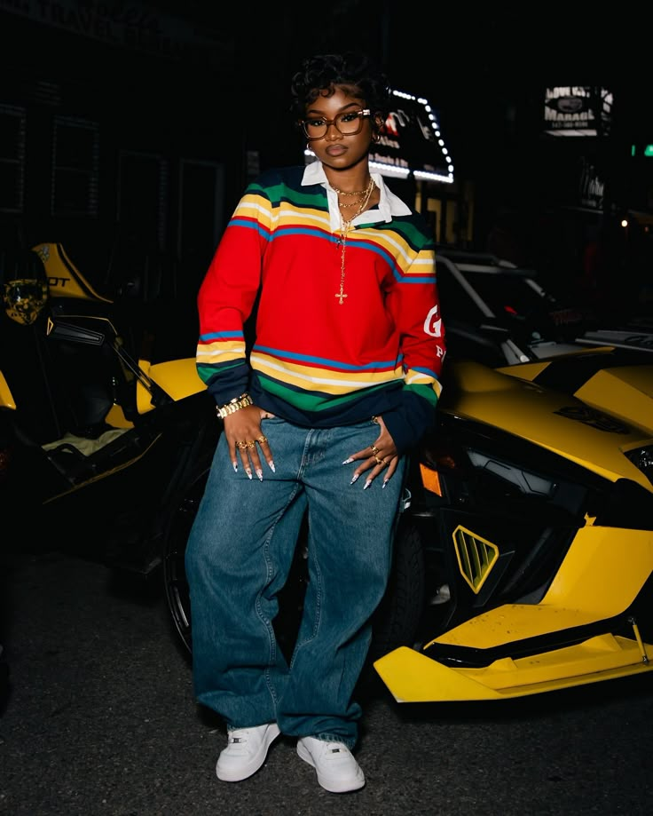
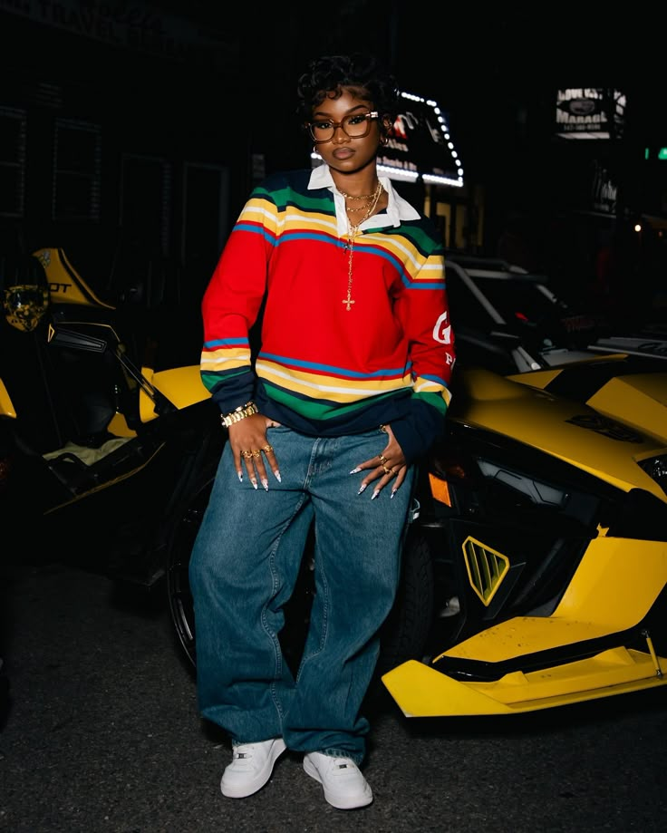

Mode & identiteit
Mode is voor mij veel meer dan kleding; het is een manier om mijn identiteit te uiten. Wat ik draag zegt iets over wie ik ben, hoe ik me voel en wat ik belangrijk vind. Iedereen heeft een unieke stijl waarmee ze zichzelf kunnen laten zien. Mode biedt de vrijheid om jezelf te uiten zonder woorden, en het stelt ons in staat om onze persoonlijkheid te tonen. De vijf outfits hierboven laten zien hoe mode een krachtig middel is om onze eigen identiteit zichtbaar te maken.
Street style

 

Street style is ontstaan in de jaren ’70 en ’80 in steden zoals New York en Los Angeles. Het kwam voort uit hiphopcultuur, skateboardscènes en jongeren die zich wilden onderscheiden van de mainstream. Artiesten zoals 2Pac, 50 Cent, Snoop Dogg... brachten deze stijl wereldwijd onder de aandacht. Denk aan baggy jeans, bandana’s, sneakers en opvallende kettingen — kleding werd een vorm van expressie. Wat mij altijd heeft geïnspireerd aan street style is hoe het vrijheid en persoonlijkheid uitstraalt. Het is geen mode die opgelegd wordt door regels, maar eentje die van de straat komt. Voor mij betekent het: jezelf durven zijn.
Outfit of the Day (OOTD)

Voor mijn OOTD kies ik outfits waarin ik me goed voel. Ik hou van kleren waarin ik vrij kan bewegen en mezelf kan zijn. Comfort en zelfvertrouwen staan voor mij op de eerste plaats. Vroeger durfde ik me niet aan te kleden zoals ik echt wou, uit angst voor wat anderen zouden denken. Maar met de tijd ben ik sterker geworden en durf ik meer. Als mensen mijn stijl niet accepteren, zijn het gewoon geen mensen die ik nodig heb. Hierboven heb ik enkele outfits geplaatst die ik heel mooi vind en die ik graag zou willen namaken.
Mode in de geschiedenis
Mode heeft door de geschiedenis heen altijd een manier geweest om identiteit en sociale status uit te drukken. In de oudheid was kleding vooral functioneel, maar in de loop der tijd werden kledingstukken een weerspiegeling van de samenleving. In de middeleeuwen droegen rijke mensen luxe stoffen, terwijl de arme bevolking eenvoudiger kleding had. In de 18e eeuw werd mode nog meer een teken van status, met extravagante jurken en kostuums. De 19e eeuw bracht massaproductie van kleding en modebladen, waardoor mode toegankelijker werd voor iedereen. De 20e eeuw bracht de grootste veranderingen, van de strakke stijlen van de jaren '20 tot de rebelse grunge mode van de jaren '90. Mode werd meer een manier om je persoonlijkheid te uiten in plaats van alleen je sociale status te tonen. Vandaag de dag is mode wereldwijd een manier om jezelf uit te drukken, je creativiteit te tonen en je plek in de samenleving te laten zien. Mode is niet alleen kleding, maar een kunstvorm die steeds blijft evolueren. Zelf ben ik altijd al geïnspireerd door de mode uit de vroegere tijden. Van de stijlen uit de jaren '60 tot de extravagantie van de 18e eeuw, ik vond het altijd fascinerend hoe mode door de eeuwen heen de persoonlijkheden en waarden van mensen weerspiegelde. Dit heeft mijn eigen visie op mode en zelfexpressie altijd beïnvloed.
Wishlist
Moodboard

Ik heb deze moodboard gecreëerd op Canva, waar ik verschillende foto's heb verzameld die mij inspireren. Elke afbeelding vertegenwoordigt een stukje van mijn persoonlijke stijl en visie op mode. Daarnaast heb ik enkele kleuren toegevoegd die ik graag draag, omdat ze perfect passen bij de esthetiek die ik wil uitstralen. Het was een leuk proces om deze beelden samen te brengen, omdat ze me herinneren aan de dingen die ik mooi vind en die mijn creativiteit aansteken. Het weerspiegelt alles wat ik waardeer in mode – van kleuren en stoffen tot de manier waarop mensen zich uiten door hun kleding.